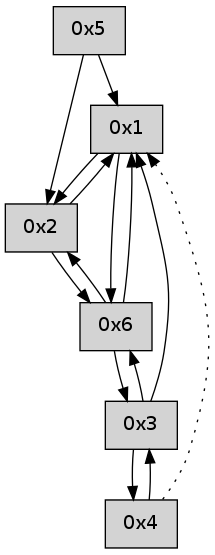

>> << IDX [start] -100 -25 -5 +0 +5 +25 +100 [515.386891127]
 Previous packets
510.003663 beacon03(adaf) #0 coord=01,02,05,03,04,06 cycle=432.0ms assoc 64 10 6e
510.013663 beacon04(adaf) #0 coord=01,02,05,03,04,06 cycle=432.0ms assoc 64 b6 44
510.023663 beacon06(adaf) #0 coord=01,02,05,03,04,06 cycle=432.0ms assoc 64 c2 58
510.035330 [Hello(4): seq=309 sym=3 asym=1 sysInfo= stat=3:8,0,0,0/1:0,0,0,0]
----------------------------------------------------------------------
510.465809 beacon01(adaf) #0 coord=01,02,05,03,04,06 cycle=432.0ms assoc
-- color-indic=0 64 bf f0
510.475770 beacon02(adaf) #0 coord=01,02,05,03,04,06 cycle=432.0ms assoc 64 ee 0f
510.485770 beacon05(adaf) #0 coord=01,02,05,03,04,06 cycle=432.0ms assoc 64 48 25
510.495770 beacon03(adaf) #0 coord=01,02,05,03,04,06 cycle=432.0ms assoc 64 d4 01
510.505772 beacon04(adaf) #0 coord=01,02,05,03,04,06 cycle=432.0ms assoc 64 72 2b
510.515772 beacon06(adaf) #0 coord=01,02,05,03,04,06 cycle=432.0ms assoc 64 06 37
510.527435 [Hello(2): seq=805 sym=1,6 sysInfo= stat=1:12,0,0,0/6:13,0,0,0]
----------------------------------------------------------------------
510.957917 beacon01(adaf) #0 coord=01,02,05,03,04,06 cycle=432.0ms assoc
-- color-indic=0 64 f3 40
510.967878 beacon02(adaf) #0 coord=01,02,05,03,04,06 cycle=432.0ms assoc 64 a2 bf
510.977877 beacon05(adaf) #0 coord=01,02,05,03,04,06 cycle=432.0ms assoc 64 04 95
510.987878 beacon03(adaf) #0 coord=01,02,05,03,04,06 cycle=432.0ms assoc 64 98 b1
510.997879 beacon04(adaf) #0 coord=01,02,05,03,04,06 cycle=432.0ms assoc 64 3e 9b
511.007879 beacon06(adaf) #0 coord=01,02,05,03,04,06 cycle=432.0ms assoc 64 4a 87
511.019553 [Hello(4): seq=310 sym=3 asym=1 sysInfo= stat=3:9,0,0,0/1:0,0,0,0]
511.024862 [Hello(1): seq=209 sym=2,6 sysInfo= stat=2:15,0,0,0/6:1,0,0,0]
----------------------------------------------------------------------
511.450026 beacon01(adaf) #0 coord=01,02,05,03,04,06 cycle=432.0ms assoc
-- color-indic=0 64 37 2f
511.459986 beacon02(adaf) #0 coord=01,02,05,03,04,06 cycle=432.0ms assoc 64 66 d0
511.469987 beacon05(adaf) #0 coord=01,02,05,03,04,06 cycle=432.0ms assoc 64 c0 fa
511.479987 beacon03(adaf) #0 coord=01,02,05,03,04,06 cycle=432.0ms assoc 64 5c de
511.489990 beacon04(adaf) #0 coord=01,02,05,03,04,06 cycle=432.0ms assoc 64 fa f4
511.499988 beacon06(adaf) #0 coord=01,02,05,03,04,06 cycle=432.0ms assoc 64 8e e8
----------------------------------------------------------------------
511.942134 beacon01(adaf) #0 coord=01,02,05,03,04,06 cycle=432.0ms assoc
-- color-indic=0 64 7a 28
511.952095 beacon02(adaf) #0 coord=01,02,05,03,04,06 cycle=432.0ms assoc 64 2b d7
511.962095 beacon05(adaf) #0 coord=01,02,05,03,04,06 cycle=432.0ms assoc 64 8d fd
511.972094 beacon03(adaf) #0 coord=01,02,05,03,04,06 cycle=432.0ms assoc 64 11 d9
511.982094 beacon04(adaf) #0 coord=01,02,05,03,04,06 cycle=432.0ms assoc 64 b7 f3
511.992096 beacon06(adaf) #0 coord=01,02,05,03,04,06 cycle=432.0ms assoc 64 c3 ef
512.003760 [Hello(4): seq=311 sym=3 asym=1 sysInfo= stat=3:10,0,0,0/1:1,0,0,0]
512.013984 [Hello(1): seq=210 sym=2,6 sysInfo= stat=2:0,0,0,0/6:1,0,0,0]
----------------------------------------------------------------------
512.434241 beacon01(adaf) #0 coord=01,02,05,03,04,06 cycle=432.0ms assoc
-- color-indic=0 64 be 47
512.444202 beacon02(adaf) #0 coord=01,02,05,03,04,06 cycle=432.0ms assoc 64 ef b8
512.454202 beacon05(adaf) #0 coord=01,02,05,03,04,06 cycle=432.0ms assoc 64 49 92
512.464202 beacon03(adaf) #0 coord=01,02,05,03,04,06 cycle=432.0ms assoc 64 d5 b6
512.474202 beacon04(adaf) #0 coord=01,02,05,03,04,06 cycle=432.0ms assoc 64 73 9c
512.484203 beacon06(adaf) #0 coord=01,02,05,03,04,06 cycle=432.0ms assoc 64 07 80
----------------------------------------------------------------------
512.926348 beacon01(adaf) #0 coord=01,02,05,03,04,06 cycle=432.0ms assoc
-- color-indic=0 64 f2 f7
512.936309 beacon02(adaf) #0 coord=01,02,05,03,04,06 cycle=432.0ms assoc 64 a3 08
512.946310 beacon05(adaf) #0 coord=01,02,05,03,04,06 cycle=432.0ms assoc 64 05 22
512.956310 beacon03(adaf) #0 coord=01,02,05,03,04,06 cycle=432.0ms assoc 64 99 06
512.966310 beacon04(adaf) #0 coord=01,02,05,03,04,06 cycle=432.0ms assoc 64 3f 2c
512.976310 beacon06(adaf) #0 coord=01,02,05,03,04,06 cycle=432.0ms assoc 64 4b 30
512.987998 [Hello(4): seq=312 sym=3 asym=1 sysInfo= stat=3:11,0,0,0/1:2,0,0,0]
512.992019 [Hello(1): seq=211 sym=2,6 sysInfo= stat=2:1,0,0,0/6:1,0,0,0]
----------------------------------------------------------------------
513.418456 beacon01(adaf) #0 coord=01,02,05,03,04,06 cycle=432.0ms assoc
-- color-indic=0 64 36 98
513.428417 beacon02(adaf) #0 coord=01,02,05,03,04,06 cycle=432.0ms assoc 64 67 67
513.438416 beacon05(adaf) #0 coord=01,02,05,03,04,06 cycle=432.0ms assoc 64 c1 4d
513.448417 beacon03(adaf) #0 coord=01,02,05,03,04,06 cycle=432.0ms assoc 64 5d 69
513.458419 beacon04(adaf) #0 coord=01,02,05,03,04,06 cycle=432.0ms assoc 64 fb 43
513.468417 beacon06(adaf) #0 coord=01,02,05,03,04,06 cycle=432.0ms assoc 64 8f 5f
513.480071 [Hello(2): seq=808 sym=1,6 sysInfo= stat=1:15,0,0,0/6:0,0,0,0]
----------------------------------------------------------------------
513.910565 beacon01(adaf) #0 coord=01,02,05,03,04,06 cycle=432.0ms assoc
-- color-indic=0 64 4e 35
513.920526 beacon02(adaf) #0 coord=01,02,05,03,04,06 cycle=432.0ms assoc 64 1f ca
513.930527 beacon05(adaf) #0 coord=01,02,05,03,04,06 cycle=432.0ms assoc 64 b9 e0
513.940528 beacon03(adaf) #0 coord=01,02,05,03,04,06 cycle=432.0ms assoc 64 25 c4
513.950528 beacon04(adaf) #0 coord=01,02,05,03,04,06 cycle=432.0ms assoc 64 83 ee
513.960527 beacon06(adaf) #0 coord=01,02,05,03,04,06 cycle=432.0ms assoc 64 f7 f2
513.971943 [Hello(1): seq=212 sym=2,6 sysInfo= stat=2:2,0,0,0/6:1,0,0,0]
513.975870 [Hello(4): seq=313 sym=3 asym=1 sysInfo= stat=3:12,0,0,0/1:3,0,0,0]
----------------------------------------------------------------------
514.402673 beacon01(adaf) #0 coord=01,02,05,03,04,06 cycle=432.0ms assoc
-- color-indic=0 64 8a 5a
514.412633 beacon02(adaf) #0 coord=01,02,05,03,04,06 cycle=432.0ms assoc 64 db a5
514.422633 beacon05(adaf) #0 coord=01,02,05,03,04,06 cycle=432.0ms assoc 64 7d 8f
514.432636 beacon03(adaf) #0 coord=01,02,05,03,04,06 cycle=432.0ms assoc 64 e1 ab
514.442634 beacon04(adaf) #0 coord=01,02,05,03,04,06 cycle=432.0ms assoc 64 47 81
514.452635 beacon06(adaf) #0 coord=01,02,05,03,04,06 cycle=432.0ms assoc 64 33 9d
----------------------------------------------------------------------
514.894781 beacon01(adaf) #0 coord=01,02,05,03,04,06 cycle=432.0ms assoc
-- color-indic=0 64 c6 ea
514.904742 beacon02(adaf) #0 coord=01,02,05,03,04,06 cycle=432.0ms assoc 64 97 15
514.914743 beacon05(adaf) #0 coord=01,02,05,03,04,06 cycle=432.0ms assoc 64 31 3f
514.924742 beacon03(adaf) #0 coord=01,02,05,03,04,06 cycle=432.0ms assoc 64 ad 1b
514.934743 beacon04(adaf) #0 coord=01,02,05,03,04,06 cycle=432.0ms assoc 64 0b 31
514.944743 beacon06(adaf) #0 coord=01,02,05,03,04,06 cycle=432.0ms assoc 64 7f 2d
514.956409 [Hello(4): seq=314 sym=3 asym=1 sysInfo= stat=3:13,0,0,0/1:3,0,0,0]
514.958206 [Hello(1): seq=213 sym=2,6 sysInfo= stat=2:3,0,0,0/6:2,0,0,0]